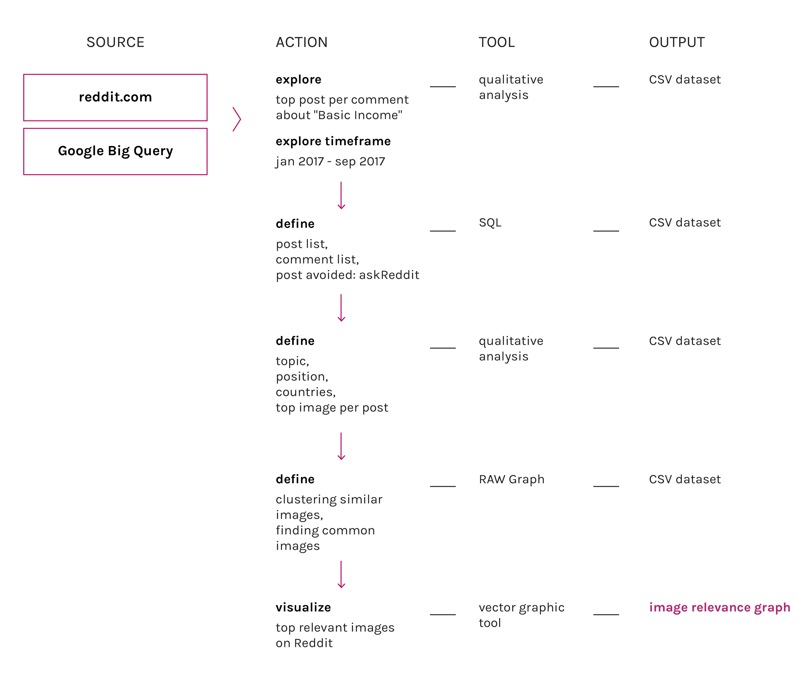

Description
This visualization shows general clusters of images that were used in articles that receive most comments on reddit in 2017. The main focus is technology, images of this type are mostly CEO’s of tech companies that are supporting the idea of universal basic income. It’s interesting to notice that when the article is about technology and basic income it’s never from a general point of view but the focus is always on the opinion of a leader in that field, Elon Musk appears to be the most quoted.
Protocol
To make this graph it was necessary to download pictures manually from the dataset of most commented articles and then to use geeqie tool to check the most frequent images and cluster them per similarity.
Data
Timestamp: 01/1/2004 - 15/11/2017
Data source: Wayback network per year
Download data (162kB)
Images collected from most commented articles